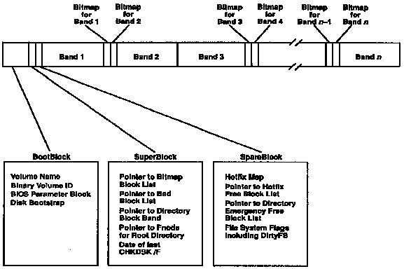

HPFS Volume Structure
HPFS volumes are a new partition type--type 7--and can exist on a fixed disk
alongside of the several previously defined FAT partition types.
IBM-compatible HPFS volumes use a sector size of 512 bytes and have a maximum
size of 2199Gb (232 sectors).
Although there is no particular reason why floppy disks can't be formatted
as HPFS volumes Microsoft plans to stick with FAT file systems on floppy disks
for the foreseeable future.
(This ensures that users will be able to transport files easily between MS-DOS
and OS/2 systems.)
An HPFS volume has very few fixed structures (Figure 1).
Sectors 0-15 of a volume (8Kb) are the Bootblock and contain a volume name,
32-bit volume ID, and a disk bootstrap program. The bootstrap is relatively
sophisticated (by MS-DOS standards) and can use the HPFS in a restricted
mode to locate and read the operating system files wherever they might be found.
Sectors 16 and 17 are known as the Super Block and the Spare Block respectively.
The Super Block is only modified by disk maintenance utilities.
It contains pointers to the free space bitmaps the bad block list the directory
block band and the root directory.
It also contains the date that the volume was last checked out and repaired
with CHKDSK /F. The Spare Block contains various flags and pointers that
will be discussed later it is modified although infrequently as the system
executes. The remainder of the disk is divided into 8Mb bands.
Each band has its own free space bitmap in which a bit represents each sector.
A bit is 0 if the sector is in use and 1 if the sector is available.
The bitmaps are located at the head or tail of a band so that two bitmaps are
adjacent between alternate bands. This allows the maximum contiguous free space
that can be allocated to a file to be 16Mb. One band located at or toward the
seek center of the disk is called the directory block band and receives
special treatment (more about this later). Note that the band size is a
characteristic of the current implementation and may be changed in later
versions of the file system.

FIGURE 1.
This figure shows the overall structure of an HPFS volume.
The most important fixed objects in such a volume are the Bootblock the Super
Block, and the Spare Block.
The remainder of the volume is divided into 8Mb bands.
There is a freespace bitmap for each band and the bitmaps are located between
alternate bands consequently, the maximum contiguous space which can be
allocated to a file is 16Mb.
< [FAT File System] |
[HPFS Home] |
[Files and Fnodes] >
Html'ed by Hartmut Frommert